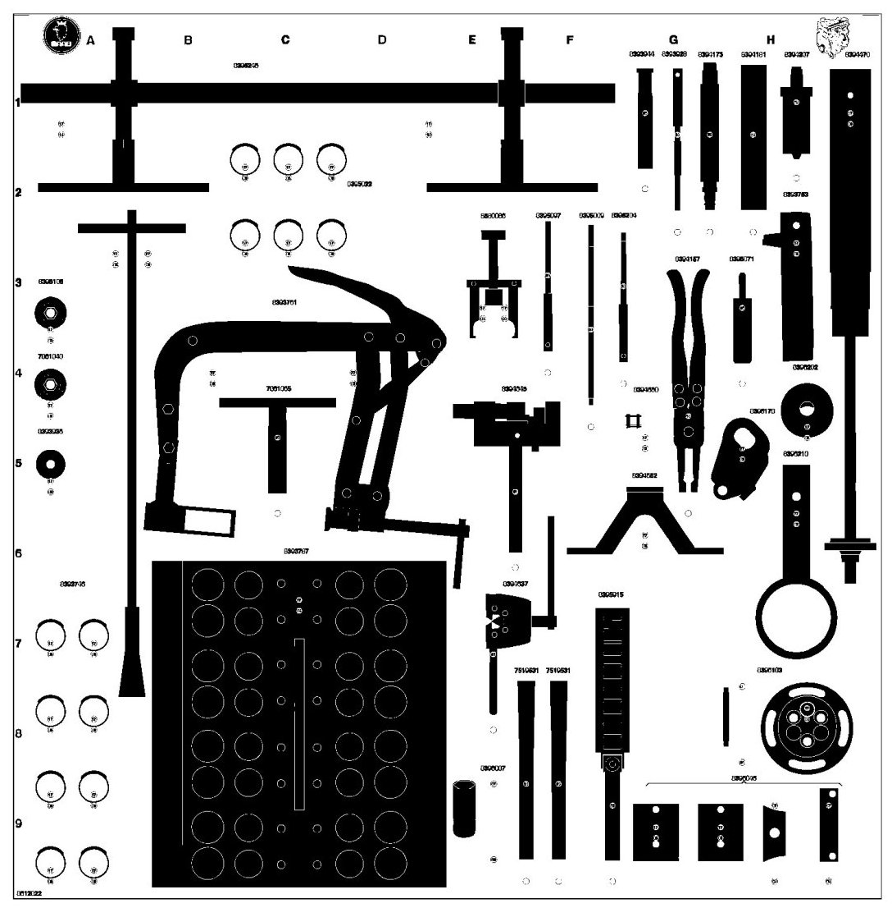

86 12 822 Toolboard T3 Engine
86 12 822 Toolboard T3 Engine

Group: Engine
Tools on the full-size toolboard (part No.):
7519531 7861040 7861065 8393746 8393753 8393761 8393787 8393928 8393936 8393944 8394157 8394173 8394181 8394207 8394470 8394637 8394645 8394652 8394660 8395022 8395071 8395089 8395097 8395105 8395204 8395246 8395915 8396046 8396087 8396103 8396178 8396202 8396210 8580086